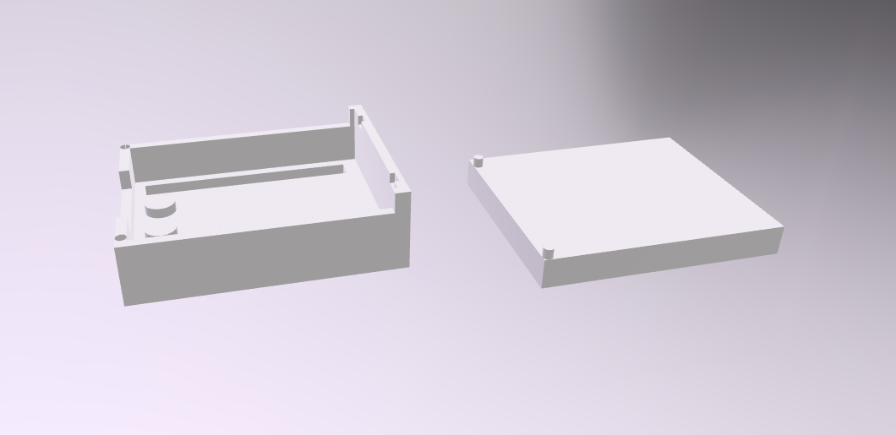

Prototype 1 is the first version of the ESP32 C3 case. It consists of two main parts: a base and a lid.
The base includes raised walls to hold the ESP32 board and cylindrical standoffs to support and secure the board in place. There is also a rectangular opening designed to allow access to ports or components.
The lid is a flat piece with four corner pins that align with the base. These help keep the lid attached to the case.